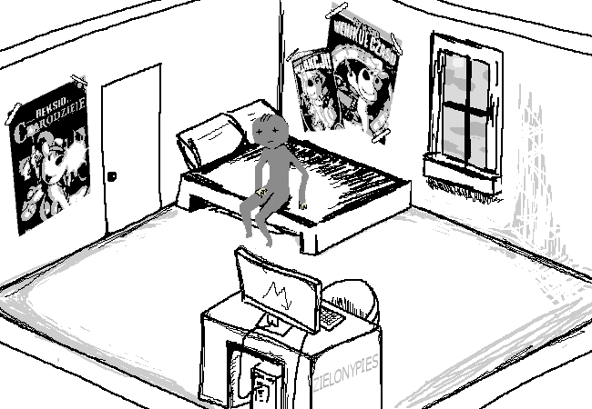

Jest rok 2900.
Wstajesz powoli z łóżka. Jesteś LUDZKO-KRECIĄ HYBRYDĄ, a twoje imię brzmi LUCJAN. Ściany twojego pokoju są udekorowane plakatami przedstawiającymi
mityczne postaci ze STAREJ SERII PRZYGÓD REKSIA - sagi gier przygodowych sprzed kilkuset lat, która na zawsze zmieniła świat. Interesujesz się szerokim zakresem tematów: od PROGRAMOWANIA, przez TEORIE SPISKOWE, aż po bardziej przyziemne hobby, takie jak na przykład FILOZOFIA.
Jesteś aktywnym członkiem wielu internetowych społeczności. Niektóre z nich skupiają się wokół ZAKAZANYCH SZTUK MAGICZNYCH, ale znaczną większość czasu pochłania ci wchodzenie w interakcje z innymi FANAMI PRZYGÓD REKSIA, którzy zafascynowani są historią starożytnych entuzjastów serii.
Zapowiada się spokojny dzień. Wstałeś wyjątkowo wcześnie. Odnosisz wrażenie, że ten format opowiadania nie jest wcale taki oryginalny i na pewno gdzieś go widziałeś, ale czekasz posłusznie na komendę.
Co robisz?